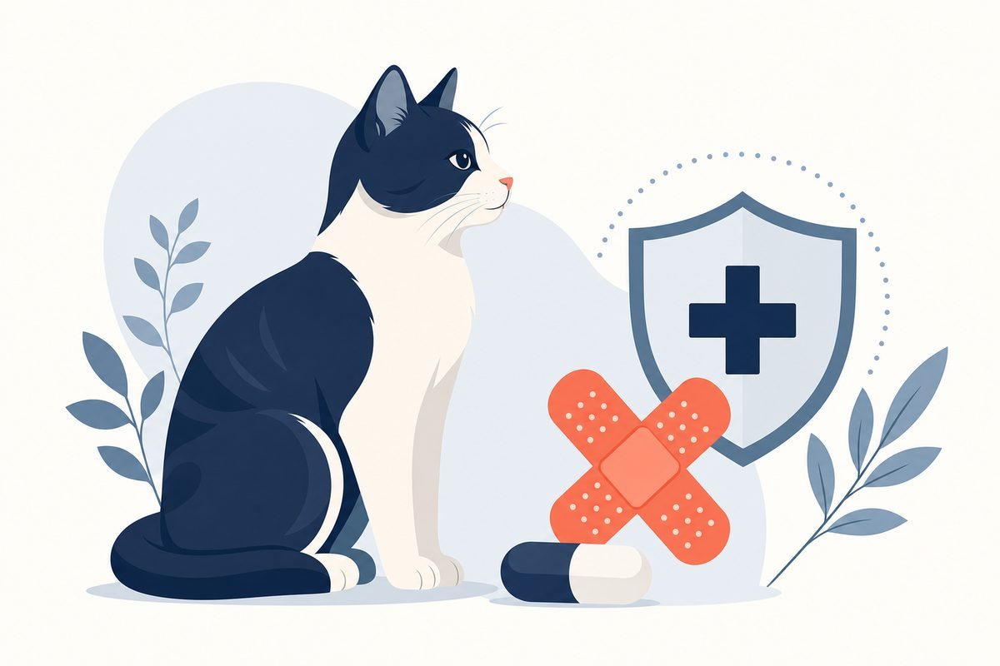

Key Takeaways
- Cat bites are considered high risk for infection because they tend to cause deep puncture wounds.[1]
- Pasteurella multocida, the primary pathogen, causes infection quickly: in a series of 55 hand infections, every patient came for treatment 12 to 72 hours after the bite.[2]
- Amoxicillin-clavulanate is the first-line prophylactic antibiotic for animal bites.[1] IDSA recommends a 3 to 5 day preemptive course for higher-risk bites, such as moderate to severe injuries of the hand or face, possible joint or bone penetration, and people who are immunocompromised or asplenic.[3]
- Hand bites are especially dangerous: infection of a flexor tendon sheath is a surgical emergency, and the Kanavel signs help identify it.[4]
- The need for rabies prophylaxis should be addressed with any animal bite,[1] and tetanus status should be checked, because animal bites count as dirty wounds for tetanus decisions.[5]

Cat bites look minor. That's the problem. A small puncture mark on the finger from a household cat barely registers as an injury, and yet, in clinical experience, hand bites from cats are among the most deceptively serious wounds that patients delay seeking care for. In a Mayo Clinic review of 193 patients treated for cat bites to the hand, 30% were hospitalized, and 67% of those hospitalized underwent surgical irrigation and debridement.[6]
The reason has everything to do with anatomy. Cat teeth are thin and sharp, and cat bites tend to cause deep puncture wounds, which is why all cat bites are considered high risk for infection.[1] Bacteria carried to the bottom of a narrow puncture are much harder to wash out than bacteria on the surface of an open wound.
This guide covers the clinical facts patients need to make sound decisions: how cat bite infections develop, what bacteria cause them, how antibiotic treatment works, when to go to the ER, and which circumstances make even a small bite a medical emergency.
Cat Bites vs. Dog Bites: Why the "Smaller" Bite Is Often More Dangerous
Most people assume that a dog bite is worse than a cat bite because dogs are larger and cause more visible damage. Infection risk tells a different story. A 2015 review puts the overall risk of infection after a bite at 10 to 20%,[7] but all cat bites are considered high risk for infection because they tend to cause deep puncture wounds.[1] Much of the difference lies in wound mechanics.
Dog bites more often tear the skin, leaving a wound that can be seen, irrigated, and cleaned. A cat bite usually leaves a small opening over a deep channel, and bacteria deposited at the bottom of that channel are hard to reach with surface cleaning. This is why cat bites, puncture wounds, and bites to the hand are all named as reasons to consider antibiotic prophylaxis.[1]
In a multicenter study of infected dog and cat bites, wound cultures grew a median of 5 bacterial isolates, and both aerobes and anaerobes were found in 56% of wounds.[8] Infection can also start quickly: wounds that become infected within 24 hours of the bite are often caused by Pasteurella.[1] A "wait and see" approach that might be reasonable for a minor scratch is not appropriate for a cat bite puncture.
| Feature | Cat Bite | Dog Bite |
|---|---|---|
| Wound type | Deep puncture: narrow entry, deep track | Often a laceration: broad, visible, drains openly |
| Infection risk | All cat bites are considered high risk[1] | Prophylaxis used for high-risk wounds and considered for average-risk wounds[1] |
| Primary pathogen | Pasteurella species (isolated from 75% of infected cat bites)[8] | Pasteurella species (50% of infected dog bites; Pasteurella canis most common), plus streptococci and staphylococci[8] |
| Infection onset | Often 12 to 24 hours; infected hands in one series presented 12 to 72 hours after the bite[2] | Infection within 24 hours is often Pasteurella, which dogs can also carry[1] |
| Rabies (US, 2021) | Cats were 5.9% of rabid animals reported[9] | Dogs were 1.0% of rabid animals reported[9] |
| Antibiotic prophylaxis | Should be considered; IDSA recommends 3 to 5 days for higher-risk bites[1][3] | Used for high-risk wounds, considered for average-risk wounds[1] |
Pasteurella multocida: The Bacterium Behind Most Cat Bite Infections
Pasteurella multocida is a common bacterium in the mouths of cats.[1] In one study of 409 domestic cats in northern Ohio, about 90% carried it at the gum line.[10] In a multicenter emergency department study, Pasteurella species were isolated from 75% of infected cat bite wounds, making it the dominant pathogen to plan treatment around.[8]
What sets Pasteurella apart clinically is its speed. In a hand surgery series of 55 Pasteurella multocida hand infections after cat or dog wounds, every patient came for treatment 12 to 72 hours after the injury, and the authors noted that cellulitis, red streaking, and drainage starting 12 to 24 hours after a bite should suggest Pasteurella.[2] If a cat bite turns red, swollen, and painful within the first day, treat it as Pasteurella until proven otherwise and get it evaluated the same day.
What Pasteurella Infection Looks Like
Early Pasteurella infection presents as a rapidly expanding area of redness, warmth, and swelling around the puncture site. The pain is often described as throbbing and disproportionate to the wound's appearance. Purulent (cloudy or yellow) discharge may appear at the puncture site. The infection can cause a chronic local infection of deep tissues and osteomyelitis.[2] Without treatment, it can progress to:
- Septic arthritis: if the bite is near or over a joint
- Osteomyelitis: bone infection, particularly dangerous in the small bones of the hand
- Necrotizing fasciitis: rare but life-threatening deep tissue destruction
- Bacteremia and sepsis: especially in immunocompromised patients
Other Pathogens in Cat Bites
Cat bites are polymicrobial. Along with Pasteurella, infected bite wounds commonly grow streptococci, staphylococci, moraxella, and neisseria, plus anaerobes such as fusobacterium, bacteroides, porphyromonas, and prevotella.[8] This mix is why IDSA recommends an antibiotic, or a combination, active against both aerobic and anaerobic bacteria, such as amoxicillin-clavulanate.[3]
Is my cat bite infected? Signs by timeline
| Time since bite | What can be normal | What suggests infection |
|---|---|---|
| First 12 to 24 hours | Mild pain, a small amount of bleeding, slight redness at the puncture | Rapidly increasing pain, swelling, redness or drainage. In a series of 55 hand infections after cat or dog wounds caused by Pasteurella multocida, all patients came for treatment 12 to 72 hours after the injury.[9] |
| Day 1 to 2 | Tenderness that is stable or improving | Redness spreading outward, warmth, pus, red streaks, fever or chills |
| Day 3 and later | Gradual healing | Worsening pain, a firm or fluctuant lump (possible abscess), or a finger that is painful to straighten |
Go to an emergency department now for red streaks, fever with spreading redness, or a hand bite with swelling and pain on finger movement (the Kanavel signs below). These can signal tendon sheath infection, which is a surgical emergency.
TeleDirectMD sees adults 18 and older by video for recent cat bites without signs of infection; hand bites and infected bites are evaluated in person. Details are on the cat bite page.
Hand Bites: A Different Level of Urgency
A cat bite anywhere on the body deserves attention. A cat bite on the hand requires same-day evaluation, full stop.
The hand is a densely packed structure where skin, tendons, tendon sheaths, joint spaces, nerves, and blood vessels lie in very close proximity. A cat's needle-like tooth can reach the sheath around a flexor tendon, the fluid-filled canal that allows smooth finger movement. Infection inside that sheath is called pyogenic flexor tenosynovitis. Animal bites and puncture wounds are common causes, and deep hand infections such as flexor sheath infections are surgical emergencies that need prompt referral.[4] In the Mayo Clinic series, a bite located over a joint or tendon sheath was one of the factors associated with hospitalization.[6]
The Kanavel Signs: What Your Doctor Is Looking For
The four Kanavel signs are the clinical hallmarks of flexor tenosynovitis.[4] Any patient with a hand cat bite who presents with these findings needs immediate referral to a hand surgeon or emergency department:
- Finger held in slight flexion: the patient cannot comfortably straighten the finger
- Fusiform (uniform) swelling of the entire digit: the whole finger is swollen, not just around the wound
- Tenderness along the flexor tendon sheath: pain when pressure is applied along the palm side of the finger
- Severe pain with passive extension: gently straightening the finger causes intense pain out of proportion to the wound
In a study of adults seen by hand surgeons for possible flexor tenosynovitis, the sensitivity of the individual Kanavel signs ranged from 91.4% to 97.1%, but their specificity was only 51.3% to 69.2%, so the signs are good at flagging possible tenosynovitis but cannot confirm it on their own.[11] Fever is frequently absent,[4] so a normal temperature does not rule out this diagnosis in someone with a hand cat bite.
Treatment is urgent: patients receive broad-spectrum intravenous antibiotics and urgent surgery to debride tissue and irrigate the tendon sheath.[4]
Antibiotic Treatment: What to Expect and Why
Cat bites are one of the situations where antibiotics are often started before any sign of infection. Antibiotic prophylaxis should be considered, especially when the risk of infection is high, such as with cat bites, puncture wounds, wounds to the hand, and people who are immunosuppressed.[1] IDSA recommends 3 to 5 days of preemptive antibiotics for people who are immunocompromised, are asplenic, have advanced liver disease, or have swelling of the bitten area, and for moderate to severe injuries (especially to the hand or face) or injuries that may have reached bone or a joint. IDSA rates this recommendation as strong, but based on low-quality evidence.[3]
First-Line Antibiotic: Amoxicillin-Clavulanate
Amoxicillin-clavulanate (brand name Augmentin) is the first-line prophylactic antibiotic for animal bites.[1] For infected bites, IDSA recommends an agent or agents active against both aerobic and anaerobic bacteria, such as amoxicillin-clavulanate,[3] and in the multicenter bite study, a beta-lactam combined with a beta-lactamase inhibitor was judged appropriate therapy based on the bacteria found.[8] The clavulanate component matters because some bacteria make beta-lactamase enzymes; the FDA label lists skin and skin structure infections caused by beta-lactamase-producing Staphylococcus aureus, Escherichia coli, and Klebsiella species among its indications.[12]
The adult oral dose listed in IDSA's bite treatment table is 875/125 mg twice daily,[13] which matches the FDA label's adult dose for more severe infections (one 875 mg tablet every 12 hours).[12] IDSA recommends 3 to 5 days for preemptive treatment of higher-risk bites;[3] a review of prophylaxis studies found that a 3 to 7 day course was likely adequate and was typical in most studies.[1] For established infections, the length of treatment is set by your clinician based on the depth of the infection and how it responds.
| Scenario | Antibiotic Choice (adult oral doses unless noted) | Typical Duration |
|---|---|---|
| Uninfected higher-risk bite (preemptive) | Amoxicillin-clavulanate 875/125 mg twice daily[13] | 3 to 5 days[3] |
| Established soft tissue infection | Amoxicillin-clavulanate 875/125 mg twice daily[13] | Set by your clinician based on response |
| Penicillin allergy option | Doxycycline 100 mg twice daily; IDSA notes excellent activity against P. multocida, though some streptococci are resistant[13] | 3 to 5 days if preemptive; otherwise set by your clinician |
| Penicillin allergy option | Moxifloxacin 400 mg once daily; IDSA lists it as monotherapy that is also good for anaerobes[13] | 3 to 5 days if preemptive; otherwise set by your clinician |
| Penicillin allergy option | Ciprofloxacin 500 to 750 mg twice daily, which misses some anaerobes, plus metronidazole 250 to 500 mg three times daily for anaerobic coverage[13] | 3 to 5 days if preemptive; otherwise set by your clinician |
| Hospitalized / IV therapy | Intravenous ampicillin-sulbactam, piperacillin-tazobactam, or a carbapenem[13] | Set by the treating team |
One important note on penicillin allergy: the FDA label says amoxicillin-clavulanate is contraindicated in anyone with a history of serious hypersensitivity reactions, such as anaphylaxis or Stevens-Johnson syndrome, to amoxicillin, clavulanate, or other beta-lactam antibiotics such as penicillins and cephalosporins.[12] If you have been told you are allergic to penicillin but are not sure what the reaction was, tell your physician what you remember, because the details of the reaction guide which alternative is chosen and whether allergy reassessment is worth discussing.
Why Antibiotics Are Started Before Culture Results
Cultures of bite wounds are generally not helpful at first, unless the wound is abscessed or already infected.[1] Routine laboratories can also miss much of the mix: in the multicenter study, a research laboratory grew a median of 5 isolates per wound, compared with a median of 1 at the local hospital laboratories.[8] For already-infected wounds, a culture helps guide therapy if initial antibiotics fail or if the infection is severe enough to require IV treatment. For most outpatient cat bites, empiric amoxicillin-clavulanate is started based on the known bacteriology, not on culture results.
Immediate Wound Care at Home, and Its Limits
The first thing to do after a cat bite is clean the wound immediately and thoroughly with soap and water, which is also the first step in rabies prevention.[14] In a clinic, bite wounds are copiously irrigated with water, normal saline, or dilute povidone-iodine solution.[1] This step matters: it reduces the number of bacteria left in the wound and is a meaningful part of infection prevention.
That said, home wound care has hard limits when it comes to cat bites. No amount of surface cleaning removes bacteria that have already been deposited deep in the wound track by a puncture. Irrigation cannot reach the bottom of a cat bite puncture the way it can clean a laceration. This is why even a well-cleaned cat bite on the hand still warrants medical evaluation and antibiotic therapy.
Should Cat Bite Wounds Be Sutured?
This is a clinical judgment call that depends on location and appearance. IDSA does not recommend primary closure of bite wounds, with the exception of wounds to the face, which should be managed with copious irrigation, cautious debridement, and preemptive antibiotics; other wounds may be approximated.[3] Wounds at high risk of infection should be left open, and letting a wound heal on its own should be considered for higher-risk wounds such as those on the hand.[1] Your treating physician will make this decision based on the specific wound characteristics.
Special Populations: Immunocompromised Patients and Capnocytophaga
Most cat bite infections are serious enough in otherwise healthy patients. In immunocompromised individuals (those with HIV, cancer, organ transplants, active use of corticosteroids or other immunosuppressants, or anyone who has had their spleen removed), a cat bite can be genuinely life-threatening from organisms that rarely cause major problems in healthy hosts.
Capnocytophaga canimorsus
Capnocytophaga infection is a rare opportunistic infection usually caused by bacteria from dog or cat bites. People with splenectomies, heavy alcohol use, or immunocompromising conditions (such as cancer and cancer treatment, chronic lung disease, and diabetes) make up 60 percent of Capnocytophaga infections. Symptoms typically begin about 3 to 5 days after the bite, and the disease can progress rapidly from a mild, localized infection to sepsis and death. Asplenic patients have a 30 to 60 times greater risk of death from Capnocytophaga infection.[15]
If you are asplenic, whether from surgical removal, sickle cell disease, or functional asplenia from another condition, a cat bite is not a low-priority event. These patients should be evaluated in person promptly, even for minor-appearing wounds, and IDSA recommends 3 to 5 days of preemptive antibiotics for asplenic patients rather than waiting for signs of infection.[3]
Diabetic Patients
Diabetes impairs neutrophil function, slows wound healing, and reduces the vascular response to infection. Cat bites in diabetic patients, particularly on the hands and feet, can progress to deep space infections and osteomyelitis more rapidly than in patients without diabetes. Prompt evaluation and a low threshold for hospitalization are appropriate in this group.
Cat Scratch Disease: A Different Infection Entirely
Patients sometimes confuse cat scratch disease (CSD) with a standard cat bite infection. They are caused by different organisms, affect different body systems, and require different management.
Cat scratch disease is caused by Bartonella henselae. People are usually infected through the scratch of a cat, particularly a kitten, when the scratch is contaminated with flea feces; infected cats that bite, or lick a person's open wound, can also spread the bacteria. The defining clinical feature is not wound infection. It is enlarged, tender lymph nodes that develop 1 to 3 weeks after exposure to a cat, sometimes with a low-grade fever and a small papule or pustule at the scratch site.[16]
Most cases of cat scratch disease resolve without antibiotic treatment, although antibiotics may help lymph node swelling go down faster, and treatment is recommended for all patients who are immunocompromised.[16] In one small study, a short course of azithromycin decreased lymph node volume more rapidly, but overall health outcomes did not differ between treated and untreated patients. Disseminated infection, such as retinitis, peliosis hepatis, or endocarditis, requires longer treatment courses.[17]
| Feature | Cat Bite Infection (Pasteurella) | Cat Scratch Disease (Bartonella) |
|---|---|---|
| Causative organism | Pasteurella multocida (primarily) | Bartonella henselae |
| Route | Bite (puncture wound) | Scratch contaminated with flea feces; also bites or licks of an open wound[16] |
| Onset | Often within 12 to 24 hours of the bite[2] | Lymph nodes enlarge 1 to 3 weeks after exposure[16] |
| Primary symptom | Rapid local wound infection: redness, swelling, pain at bite site | Enlarged, tender lymph nodes |
| Treatment | Antibiotic active against aerobes and anaerobes, such as amoxicillin-clavulanate[3] | Most cases resolve without antibiotics; treatment for immunocompromised patients[16] |
Do you need antibiotics for a cat scratch?
Usually not. CDC notes that most cat scratches do not result in cat scratch disease, and that most cases of cat scratch disease resolve without antibiotic treatment; antibiotics are recommended for all patients who are immunocompromised.[16] CDC advises seeing a healthcare provider for a fever, enlarged and tender lymph nodes that develop 1 to 3 weeks after a scratch, or a pustule at the scratch site.[16] Our guide to antibiotics for a cat scratch covers infected scratch wounds and cat scratch disease in detail.
Rabies Risk Assessment After a Cat Bite
Rabies is rare in domestic cats in the United States, but it is not zero. Rabies is fatal but preventable, and it can cause severe disease and death without appropriate and urgent post-exposure prophylaxis.[18] The need for rabies prophylaxis should be addressed with any animal bite, because even domestic animals are often unvaccinated.[1]
In 2021, cats made up 5.9% of the rabid animals reported in the United States, compared with 1.0% for dogs, and more rabid cats were reported than any other domestic animal that year.[9]
Risk Stratification by Cat Type
- Vaccinated indoor-only cat, known owner: Very low risk. The cat can be observed for 10 days; if it is alive and well 10 days after the bite, there was no risk of rabies at the time of the bite.[19]
- Vaccinated outdoor cat, known owner: A healthy cat can be observed for 10 days.[1]
- Unvaccinated or unknown vaccination status cat: Contact your state or local health department; a health official familiar with rabies should conduct the risk assessment.[18] A healthy cat should still be observed for 10 days if possible.[1]
- Stray, feral, or unavailable cat: The cat cannot be observed. Consultation with local health officials is recommended to decide whether rabies vaccination should be started.[3] Do not wait for symptoms; get the risk assessment promptly.
A cat that could transmit rabies at the time of a bite would develop severe illness or die within 3 to 4 days of the bite, and the 10-day observation period includes a safety factor. If the cat is alive and well 10 days after the bite, there was no risk of rabies at the time of the bite,[19] and post-exposure prophylaxis is generally not needed after a dog or cat bite.[1]
Post-exposure prophylaxis, when indicated, begins with immediate and thorough cleansing of all wounds with soap and water. For people never vaccinated against rabies, it adds rabies immune globulin, with the full dose infiltrated around the wounds if possible, and one vaccine injection on each of days 0, 3, 7, and 14, plus a fifth dose on day 28 for people with immune disorders. People previously vaccinated against rabies get two vaccine doses three days apart and no immune globulin. With the cell culture vaccines used in the United States, there have been no PEP failures in immunocompetent patients.[14]
Tetanus Prophylaxis
Tetanus is caused by a toxin from Clostridium tetani. For tetanus decisions, CDC counts puncture wounds and wounds containing saliva, such as animal bites, as dirty or major wounds.[5]
Tetanus prophylaxis should be assessed at every animal bite evaluation. For a dirty or major wound such as a cat bite, CDC guidance is:[5]
- Complete primary series, last tetanus vaccine less than 5 years ago: No vaccine needed.
- Complete primary series, last tetanus vaccine 5 or more years ago: Tetanus vaccine recommended.
- Unknown history, never vaccinated, or incomplete primary series: Tetanus vaccine plus tetanus immune globulin (TIG).
- HIV or severe immunodeficiency: TIG is also indicated for dirty or major wounds.
When a booster is given, IDSA prefers Tdap over Td if Tdap has not been given before.[3] Antibiotics, topical or systemic, are not recommended during wound care as a way to protect against tetanus.[5]
When Imaging Is Needed
Most cat bites do not require imaging. The wound should be explored for tendon or bone involvement and for foreign bodies such as tooth fragments, and an X-ray is indicated if a foreign body or bone involvement is suspected.[1] Two specific clinical scenarios warrant X-rays:
Suspected retained tooth fragment. Cat teeth can break off at the tip during a bite and remain embedded in tissue. A retained tooth fragment is a foreign body that will prevent healing, serve as a nidus for persistent infection, and may require surgical removal. If the bite resulted in a crunching sensation, if there is a gap where a tooth should be, or if the wound does not heal as expected, plain X-ray of the affected area is appropriate to look for a radiopaque fragment.
Concern for osteomyelitis. Bites near bone, particularly on the hand, foot, or face, carry a risk of direct bone inoculation. If the wound overlies a bony prominence, or if a patient with an established infection is not responding to antibiotics, X-ray and possibly MRI are ordered to assess for periosteal reaction or bony erosion consistent with osteomyelitis. Early osteomyelitis may not be visible on plain films, and MRI is more sensitive for early-stage disease.
When to Go to the ER, and When Telehealth Is Appropriate
Not every cat bite requires an emergency department visit. The goal is to match the level of care to the clinical risk, not to reflexively send every patient to the ER or, conversely, to delay care that is genuinely urgent.
- Bite on the hand, wrist, or over any joint
- Any of the four Kanavel signs are present
- Rapidly spreading redness or red streaking up the arm or leg (lymphangitis)
- Fever, chills, or systemic illness
- You are immunocompromised, asplenic, or have significant liver disease
- You are diabetic and the bite is on the hand, foot, or lower extremity
- Stray, feral, or strangely behaving cat: rabies PEP may be needed
- Concern for retained tooth fragment or bone involvement
- Bite is on a low-risk area (trunk, lower leg, back) with no active signs of infection
- Wound is superficial (skin surface only) with no deep puncture component
- Cat is known, vaccinated, and can be observed for 10 days
- Patient is otherwise healthy with no immunosuppression, diabetes, or asplenia
- No signs of infection yet, but antibiotic prophylaxis is needed
- Tetanus status needs to be assessed and patient needs a prescription or referral
Telehealth evaluation is well-suited to triaging cat bites, assessing vaccination status, prescribing antibiotic prophylaxis, and establishing a follow-up plan. What telehealth cannot do is perform a physical examination of the wound, which means any patient with signs of active infection, a bite on the hand, or significant risk factors should be seen in person.
Signs of Serious Infection: What Requires Immediate Attention
Cat bite infections can progress quickly. Knowing the warning signs means the difference between outpatient antibiotics and a surgical admission.
- Redness expanding beyond the wound edge: Cellulitis spreading outward from the bite site, especially within the first day, is a sign of aggressive infection.
- Red streaking extending up a limb: Lymphangitis (red lines running from the wound toward the groin or armpit) indicates bacterial spread through the lymphatic system. This is a sign of serious infection.
- Fever or chills: Any fever after a cat bite, even a low-grade one, should prompt same-day in-person evaluation.
- Pus or increasing discharge: Purulent drainage from the wound site, especially if increasing despite antibiotic treatment, suggests inadequate drainage or abscess formation.
- Pain getting worse on antibiotics: Pain, redness, or swelling that keeps worsening after antibiotics are started is a red flag for deeper involvement of tendon, joint, or bone and needs same-day reassessment.
- Numbness or loss of grip: Any sensory or motor change in a hand after a cat bite is a potential sign of deep structure involvement and needs urgent surgical evaluation.
Frequently Asked Questions
Spreading redness, warmth, swelling, pus, increasing pain, red streaks or fever are signs of infection. Infection from Pasteurella often starts within a day. Red streaks, fever or a swollen, painful finger need in-person care now.
IDSA recommends an antibiotic active against both aerobic and anaerobic bacteria, such as amoxicillin-clavulanate. For people with a penicillin allergy, the physician chooses an alternative based on the allergy type and the wound. The choice and length of treatment are made at the visit.
Not every cat bite requires an ER visit, but all cat bites should be evaluated by a physician. Go to the ER immediately if the bite is on your hand, wrist, or over a joint; if you see rapidly spreading redness or red streaks; if you have a fever; if you are immunocompromised, diabetic, or asplenic; or if the wound is deep and may have penetrated a tendon or joint. A telehealth evaluation is appropriate for mild bites on low-risk body areas in otherwise healthy patients with no active signs of infection.
Amoxicillin-clavulanate (Augmentin) is the first-line prophylactic antibiotic for animal bites, and IDSA lists an adult dose of 875/125 mg twice daily. IDSA recommends a 3 to 5 day preemptive course for higher-risk bites. For penicillin-allergic patients, IDSA's bite treatment table lists options such as doxycycline, moxifloxacin, or ciprofloxacin combined with metronidazole; the physician picks one based on the allergy and the wound.
Cat bite infections can develop quickly. In a series of 55 Pasteurella multocida hand infections after cat or dog wounds, every patient came for treatment 12 to 72 hours after the injury, and the authors noted that cellulitis, red streaking, and drainage starting 12 to 24 hours after a bite should suggest Pasteurella (Arons et al., 1982). If the bite becomes red, swollen, warm, or painful within the first day, get it evaluated the same day.
All cat bites are considered high risk for infection because they tend to cause deep puncture wounds. Cat teeth are thin and needle-sharp, so the bite leaves a small opening over a deep track that is hard to clean. Dog bites more often cause lacerations that bleed, drain, and can be irrigated. Cat bites, especially to the hand, can reach tendon sheaths and joint spaces that are difficult to treat once infected.
Rabies risk depends on the cat's vaccination status and circumstances. A healthy cat that bit someone can be observed for 10 days; if it is alive and well at 10 days, there was no rabies risk at the time of the bite, and post-exposure prophylaxis is generally not needed. If the cat is unavailable, feral, or behaving abnormally, contact your state or local health department, because a health official familiar with rabies should do the risk assessment. If post-exposure prophylaxis is advised, start it without delay.
Yes, they are distinct conditions. A cat bite infection is caused primarily by Pasteurella multocida and produces rapid local wound inflammation, often within a day. Cat scratch disease is caused by Bartonella henselae, usually follows a scratch, and causes enlarged, tender lymph nodes that develop 1 to 3 weeks after exposure. Most cases of cat scratch disease resolve without antibiotics, while cat bite infections need prompt antibiotic treatment.
The Kanavel signs are four clinical findings that point to pyogenic flexor tenosynovitis, an infection of the tendon sheath in the finger that is a surgical emergency: (1) finger held in slight flexion, (2) fusiform (uniform, sausage-like) swelling of the entire digit, (3) tenderness along the flexor tendon sheath, and (4) intense pain with passive extension of the finger. Animal bites and puncture wounds are common causes of this infection. Any cat bite to the hand with these findings requires immediate ER evaluation. Fever is often absent, so a normal temperature does not rule out this diagnosis.
It depends on your vaccination history. Animal bites count as dirty wounds for tetanus. If you completed the primary series and your last tetanus vaccine was less than 5 years ago, you do not need one now. If it has been 5 years or more, a booster is recommended. If your vaccination history is incomplete or unknown, both a tetanus vaccine and tetanus immune globulin (TIG) are recommended. Your physician will assess this as a routine part of any bite evaluation.
How to cite this guide
Bhavsar P. Cat Bite Treatment Guide: Infection Risk, Antibiotics & When to Go to the ER. TeleDirectMD Health Guides. Last reviewed November 2026. https://teledirectmd.com/health-guides/cat-bite-treatment-guide/
References
- Ellis R, Ellis C. Dog and Cat Bites. Am Fam Physician. 2014;90(4):239-243. PMID 25250997. https://www.aafp.org/pubs/afp/issues/2014/0815/p239.html
- Arons MS, Fernando L, Polayes IM. Pasteurella multocida: the major cause of hand infections following domestic animal bites. J Hand Surg Am. 1982;7(1):47-52. https://doi.org/10.1016/s0363-5023(82)80013-0
- Stevens DL, Bisno AL, Chambers HF, et al. Practice Guidelines for the Diagnosis and Management of Skin and Soft Tissue Infections: 2014 Update by the Infectious Diseases Society of America. Clin Infect Dis. 2014;59(2):e10-e52. doi:10.1093/cid/ciu296. Guideline PDF hosted by IDSA. https://www.idsociety.org/globalassets/idsa/practice-guidelines/practice-guidelines-for-the-diagnosis-and-management-of-skin-and-soft-tissue-infections-2014-update-by-the-infectious-diseases-society-of-america.pdf
- Chan E, Robertson BF, Johnson SM. Kanavel signs of flexor sheath infection: a cautionary tale. Br J Gen Pract. 2019;69(683):315-316. Case report. https://doi.org/10.3399/bjgp19X704081
- Centers for Disease Control and Prevention (CDC). Clinical Guidance for Wound Management to Prevent Tetanus. Reviewed September 8, 2026. https://www.cdc.gov/tetanus/hcp/clinical-guidance/index.html
- Babovic N, Cayci C, Carlsen BT. Cat bite infections of the hand: assessment of morbidity and predictors of severe infection. J Hand Surg Am. 2014;39(2):286-290. https://doi.org/10.1016/j.jhsa.2013.11.003
- Rothe K, Tsokos M, Handrick W. Animal and Human Bite Wounds. Dtsch Arztebl Int. 2015;112(25):433-442. PMID 26179017 (abstract). https://pubmed.ncbi.nlm.nih.gov/26179017/
- Talan DA, Citron DM, Abrahamian FM, Moran GJ, Goldstein EJ. Bacteriologic analysis of infected dog and cat bites. N Engl J Med. 1999;340(2):85-92. https://doi.org/10.1056/NEJM199901143400202
- Ma X, Bonaparte S, Corbett P, et al. Rabies surveillance in the United States during 2021. J Am Vet Med Assoc. 2023;261(7):1045-1053. https://doi.org/10.2460/javma.23.02.0081
- Freshwater A. Why your housecat's trite little bite could cause you quite a fright: a study of domestic felines on the occurrence and antibiotic susceptibility of Pasteurella multocida. Zoonoses Public Health. 2008;55(8-10):507-513. https://doi.org/10.1111/j.1863-2378.2008.01152.x
- Kennedy CD, Lauder AS, Pribaz JR, Kennedy SA. Differentiation Between Pyogenic Flexor Tenosynovitis and Other Finger Infections. Hand (N Y). 2017;12(6):585-590. https://doi.org/10.1177/1558944717692089
- U.S. Food and Drug Administration label via DailyMed. AUGMENTIN (amoxicillin and clavulanate potassium) tablet, film coated; powder, for suspension. Dr. Reddy's Laboratories Inc. Revised 9/2016. https://dailymed.nlm.nih.gov/dailymed/drugInfo.cfm?setid=174cc098-fe49-4f1a-87e2-601c7573f0db
- Stevens DL, Bisno AL, Chambers HF, et al. Executive Summary: Practice Guidelines for the Diagnosis and Management of Skin and Soft Tissue Infections: 2014 Update by the Infectious Diseases Society of America. Clin Infect Dis. 2014;59(2):147-159. Table 5. https://doi.org/10.1093/cid/ciu444
- Centers for Disease Control and Prevention (CDC). Rabies Post-exposure Prophylaxis Guidance. Reviewed September 10, 2026. https://www.cdc.gov/rabies/hcp/clinical-care/post-exposure-prophylaxis.html
- Centers for Disease Control and Prevention (CDC). Clinical Overview of Capnocytophaga. Reviewed August 26, 2025. https://www.cdc.gov/capnocytophaga/hcp/clinical-overview/index.html
- Centers for Disease Control and Prevention (CDC). About Cat Scratch Disease. Reviewed September 11, 2026. https://www.cdc.gov/bartonella/about/about-cat-scratch-disease.html
- Centers for Disease Control and Prevention (CDC). Clinical Overview of Cat Scratch Disease. Reviewed March 23, 2026. https://www.cdc.gov/bartonella/hcp/clinical-overview/cat-scratch-disease.html
- Centers for Disease Control and Prevention (CDC). Clinical Screening for Rabies PEP. Reviewed September 11, 2026. https://www.cdc.gov/rabies/hcp/diagnosis/index.html
- Minnesota Department of Health. Frequently Asked Questions: Animal Bites and Rabies Risk: A Guide for Health Professionals. Last updated 10/20/2022. https://www.health.state.mn.us/diseases/rabies/risk/faq.html